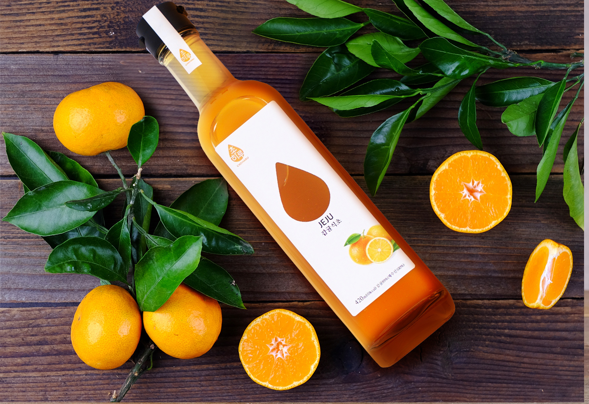
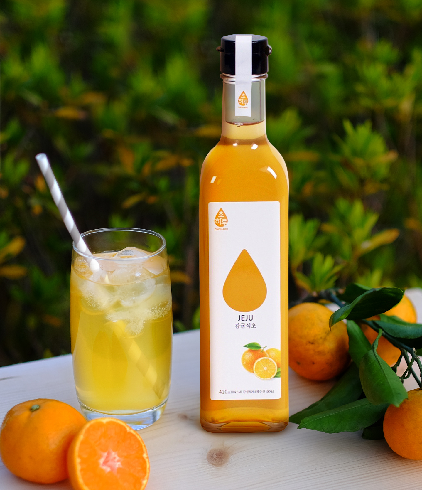

Real Life For You
all2-container
fix-section
Real Life For You
리얼 라이프 포유'는 당신의 건강을 최우선으로 생각'하는 기업입니다.
몸이 먼저 반응하는 건강한 식초는 리얼 라이프 포유의 자존심이자 자랑입니다.
video1
건강한 자연이
fix-section2
video2
video2
text
청정지역에서 자라는 건강한 식초
마셔보면
몸이 먼저 반응한다!
fix-section3
store1
천연발효 감귤식초
1kg의 감귤이 오랜 시간 발효되고 숙성되어 만들어지는 단 한 병. 물은 한 방울도 들어가지 않고 손수 껍질을 깐 귤 알맹이와 소량의 유기농 설탕이 들어가 더욱 맛있는 천연 제주 감귤 발효식초입니다.
store2

감귤파인애플식초
1kg의 감귤이 오랜 시간 발효되고 숙성되어 만들어지는 단 한 병.
물은 한 방울도 들어가지 않고 손수 껍질을 깐 귤 알맹이와 파인애플, 소량의 유기농 설탕이 들어가 더욱 맛있는 천연 제주 감귤파인애플 발효식초입니다.
리얼 라이프 포유'는 당신의 건강을 최우선으로 생각'하는 기업입니다.
몸이 먼저 반응하는 건강한 식초는 리얼 라이프 포유의 자존심이자 자랑입니다.
건강한 자연이
건강한 식품을 만듭니다.
믿고 먹을 수 있는 식품

매일마다 꾸준한 관리로, 믿을 수 있는 농부들이 직접 제배부터 제조까지 함께 합니다.
이제는 믿고 건강한 음식들로 하루를 채워보세요!마셔보면
몸이 먼저 반응한다!
스토어

₩15000
₩15000